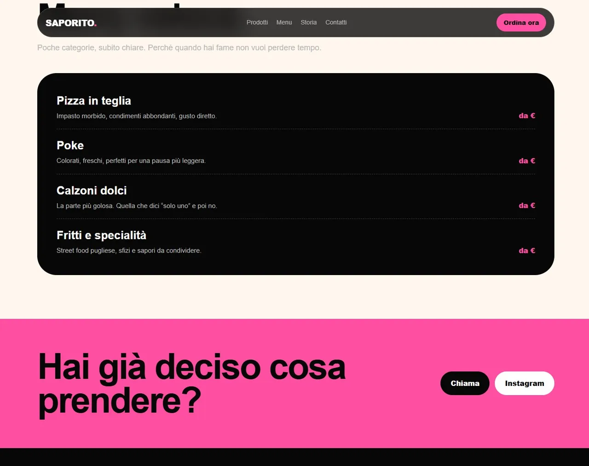
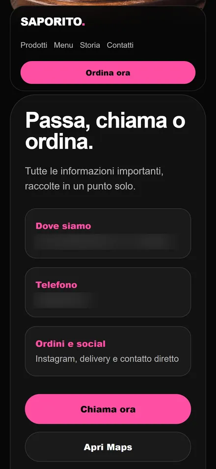

Food · Pescara
Concept
Saporito Pescara
Pizza in teglia e street food pugliese. Un brand con carattere, raccontato quasi solo dai social.
- Il problema
- Tutta la comunicazione vive su Instagram. Chi arriva da Google o da un consiglio non trova un posto dove vedere il menu, capire dov'è il locale e ordinare.
- La direzione
- Il nero e il rosa del brand restano protagonisti, ma dentro una struttura leggibile. Food first: foto grandi, testi corti, tre strade chiare — menu, chiamata, mappa.
- Il risultato
- Una demo completa e navigabile: home, prodotti, menu, storia e contatti. Disegnata prima per lo smartphone, dove arriva chi ti scopre da Instagram.
- Deliverable
- Concept UI · Design system (nero, rosa, crema) · 4 sezioni · Versione mobile · Copy
Progetto dimostrativo realizzato a scopo di portfolio. Non è commissionato, affiliato né approvato da Saporito.

